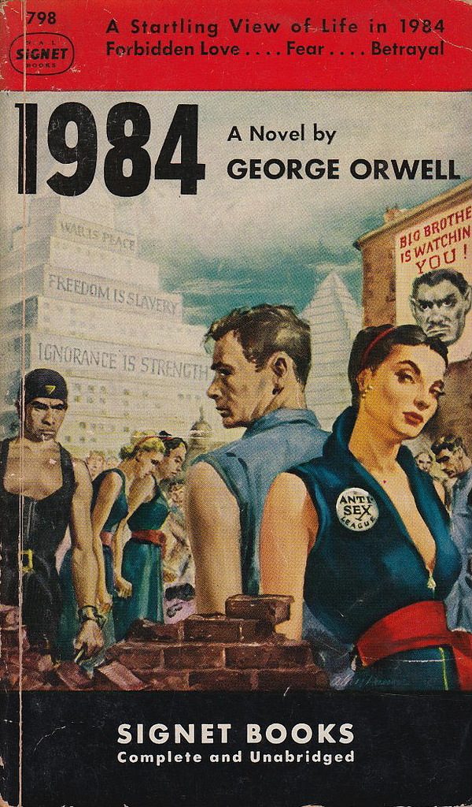
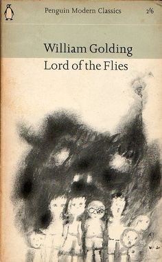
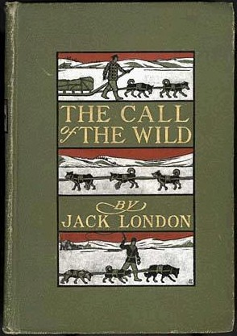

There are so many reasons to read books like mental stimulation, which will keep you on your toes even when you are old, readings act as a stress reliever, and who couldn't use that today. There also is the age old saying that knowledge is power and you get knowledge, new experiences, and a vastly improves vocabulary from reading books! Reading is a good way to help improve memory because reading stories requires you to remember the plot, setting, characters, and relationships that make up a story. Stronger analytical thinking skills are developed and improved as you read which will be beneficial to yourself, just like the improved focus and concentration you will get from regularly reading books. Reading books also allows you to see and understand good writing which enables you to write better as a result of reading. Books are also a fantastic source of entertainment because there are so many genres out there for you to explore. Books are often times free at your local library so books are also a source of free entertainment.
Reading classic books means you will be reading something of value because there is a reason why these books are classics and have stood against the test of time. These books are also heavily referenced in day to day conversations, so it is good to be in the know about these books. Reading these books will ensure that literary references don’t fly pass you and you can keep up with the conversation. Often times there are films of the books so once you have read the books you can go and watch the movie and the book in action. The classics are classics because they carry significant weight in that they can enlighten you to things you never knew and help you to make novel insights. The era is which many classic books were written means they will challenge your brain when you read them because it will make you think critically so you can understand the meaning of the book. Literature or books is also a form of art so reading will keep you cultured and knowledgeable about the world.
Nowadays there are so many different ways to explore books from the old fashion way of browsing at a bookstore or library to websites dedicated to helping people find the perfect book for them. With so many books out there is can be daunting trying to find the right books for you to read so here are some tips to help you out. Try first looking for some other books written by the same author of books you have liked in the past or look in the same genre of books you have previously enjoyed. Websites like Goodreads are an excellent source of information about books because they have summaries, user ratings of books, and comments about the book for you to browse through. This site also allows you to track the books you read and books you want to read in the future, this will help you organize what kinds of books you enjoy reading. There are also many lists out there on the internet of suggestions of books to read so you can always look those up.
Book Title |
Image |
Summary |
1984 |
 | 1984 is a dystopic novel set in a fictious place called Oceania, written by George Orwell. In Oceania there is an omisceient leader, Big Brother, and The Party controls every aspect of Oceania. |
The Great Gatsby |
The Great Gatsby is by F. Scott Fitzgerald and the book is set in the 1920s. The story is narrated by Nick Carraway, the neighbor of the mysterious Gatsby, who throws extravagant parties. | |
To Kill a Mocking Bird |
To Kill a Mocking BIrd was published in 1960 and written Harper Lee. The book is set in Alabame buring the Great Depression. The book is centered around Scout Finch, Atticus Finsh, and Boo Radley. Atticus is a lawyer that is defending a black man charged with raping a white woman. | |
Wuthering Heights |
Wuthering Heights was written by Emily Bronte in 1847. The book is about a twisted love traingle that spans multiple generations, set in Victorian times. | |
Lord of the Flies |
 | Lord of the Flies is written by William Golding about a group of British boys whos' plane was shot downover the Pacfic. They crash in an uninhabiated island so they are going to have to survive without adult supervision. |
Call of the Wild |
 | The Call of the Wild was published in 1903 by Jack London. This book is a short adventure book set in the 1890s in the Klondike Gold Rush. |